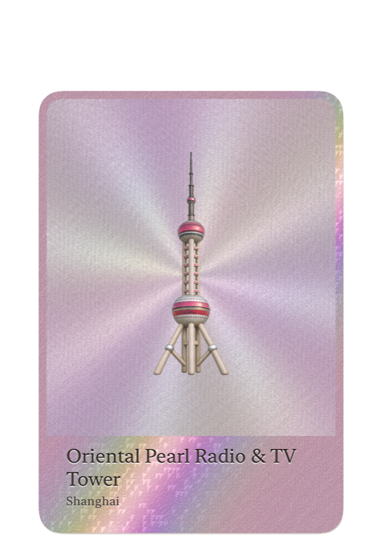
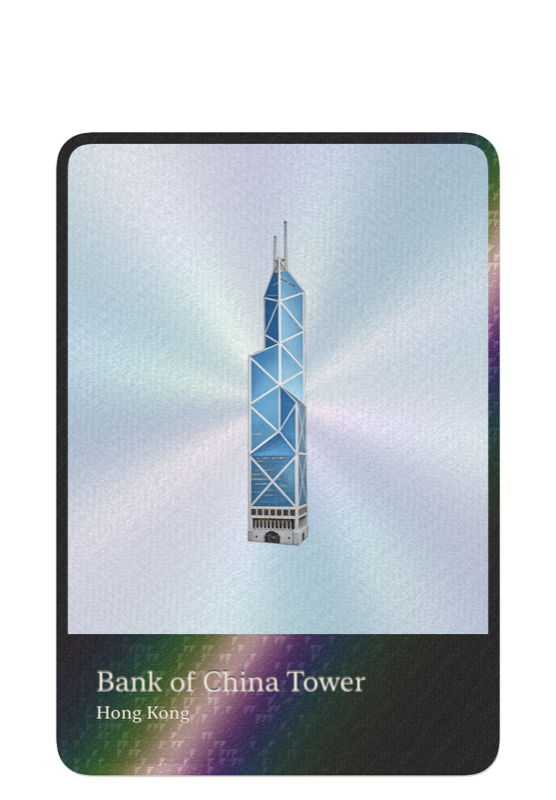

Five cities and a growing collection of landmarks.
Currently supported: Beijing · Shanghai · Shenzhen · Hong Kong · Chongqing
✦


A CITY. A STORY. A KEEPSAKE.
A little discovery. A lasting city memory.
From the Temple of Heaven to modern skylines, LumiFolio brings architecture, photos and city memories together through a visual style inspired by Chinese papercut art. Explore at your own pace, whether you love architecture, city photography or collecting cards.
From city discoveries to a collection of your own.
Photograph and unlock landmarks
Align the building with its outline and take a photo. When it’s recognised, the papercut landmark lights up and its foil card joins your collection. You can also choose a photo from your library or check in near the landmark.
Align the building with the outlineTemple of Heaven foil card